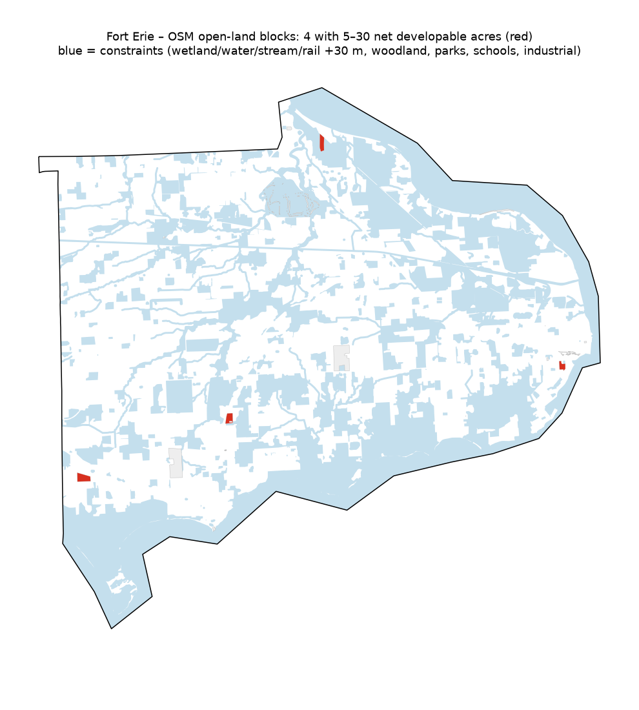

A first-pass screening of the Town of Fort Erie, built only from OpenStreetMap (© OpenStreetMap contributors, ODbL). It shows the constraint-overlay and net-developable-area logic that a full parcel-level study would use.

| ID | Gross acres | Net developable acres | % constrained | Centroid (lat, lon) |
|---|---|---|---|---|
| 851 | 21.6 | 21.6 | 0.0 | 42.87529, -79.10805 |
| 987 | 15.0 | 15.0 | 0.0 | 42.96945, -79.0122 |
| 552 | 15.5 | 14.4 | 7.4 | 42.89138, -79.05073 |
| 856 | 9.4 | 9.4 | 0.0 | 42.90403, -78.92082 |
A packaged QGIS/ArcGIS Pro project for Simcoe County, Owen Sound and Fort Erie. It covers parcel fabric (Ontario Parcel / Teranet licence or municipal open-data parcels where available), provincial plan areas, County/Region and local OP designations and zoning, conservation-authority regulation limits (NVCA, LSRCA, Grey Sauble, NPCA), floodplain, PSW/ELC wetlands, woodlands and rail. It also includes net-developable-acre calculations, a ranked shortlist in XLSX and KMZ, PDF maps per municipality, and a dated source register noting any digitised or unavailable data.
Prepared by Nurtac Suleymanzade, PhD (Geography): GIS & spatial analysis. Built with Python (geopandas, rasterio, statsmodels, PySAL). Portfolio home